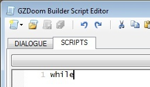
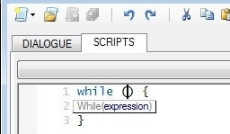

In the Script Editor you can use and create code snippets, which are small blocks of reusable code that you can insert where you need it in your code.
Using code snippets:
To use a snippet, pick it from the drop-down menu.
Alternatively, type the name of a snippet (or place the cursor inside of already existing one), then press the Tab key to expand it.
Example: to create the while loop, type "while"...

...and press the Tab key.

Creating new code snippets:
Code snippets are plain text files stored in [GZDB]\Snippets\[category], so just create a new text file there and add the code you want into it. Currently the only supported "special" token is $EP (Entry Point) - that's the place where the cursor will be placed after inserting a snippet.
Warning: snippet's file name should not contain spaces.
Creating new code snippets for custom scripting configurations:
To add snippets to a scripting configuration, which doesn't already have existing snippets ("Insert a Code Snippet" drop-down is disabled in the Script Editor), you'll have to: